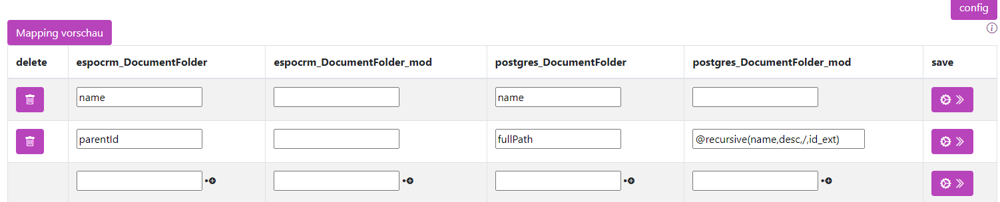
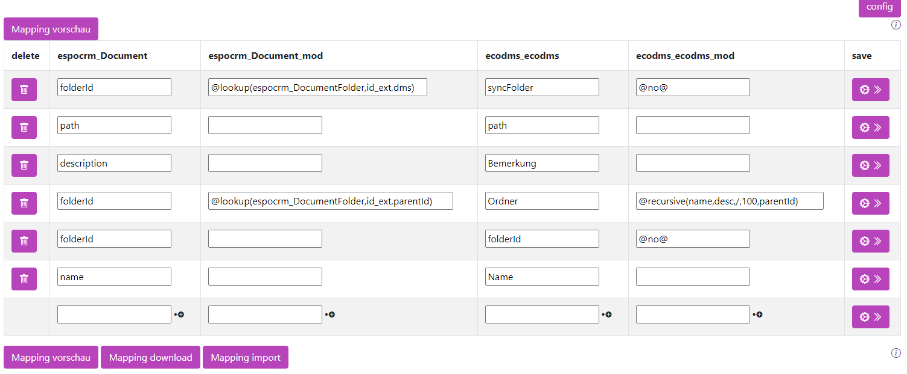
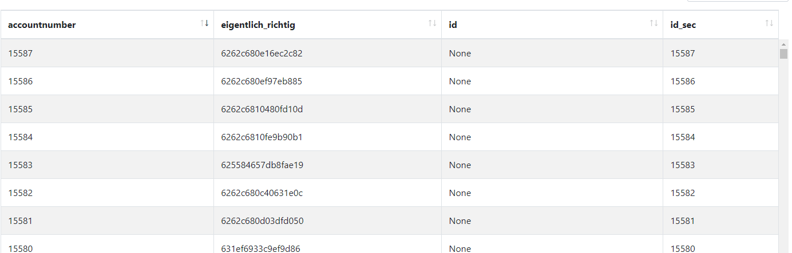
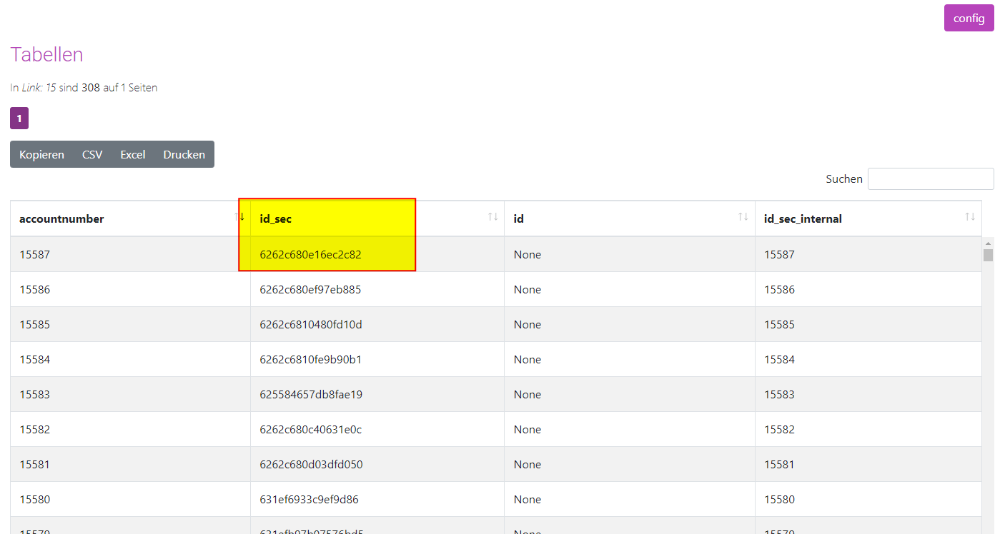
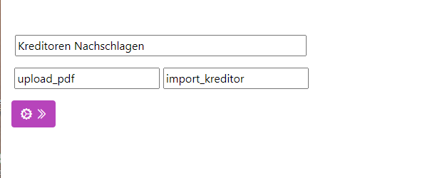
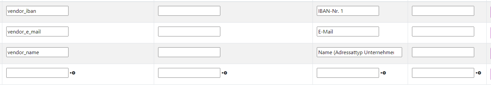
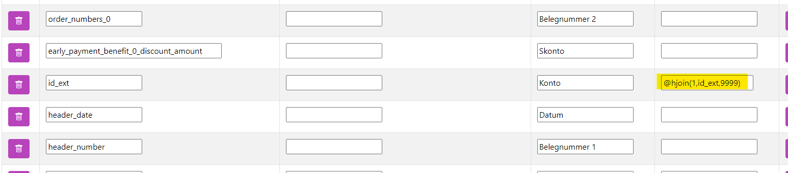

Lookups
Stand: Turm Version 15.0.0 - 18.03.2024
Mapping: Nachschlagen von Werten aus anderen Tabellen Lookup
Um einen Wert in einer anderen Tabelle nachzuschlagen, wird der Befehl @lookup verwendet.
@lookup(tabellenname, referenzwert, zusetzenderWert, <Optional ORDER>, <Optional WHERE>, <Optional MAX>)
| Name | Bedeutung | Beispiel |
|---|---|---|
| tabellenname | Der Name der Tabelle im Turm. | espocrm_Account |
| referenzwert | Der Name der Spalte, die in der vorher genannten Tabelle denselben Wert hat wie die Ursprungstabelle. Profi-Tipp: Mehrere Spalten können mittels AND verbunden und der SQL-Befehl direkt geschrieben werden. |
Einfach: id_ext Mit mehreren Spalten: id_ext AND customer_id = "espocrm_conctacts"."account_id" |
| zusetzenderWert | Der Name der Spalte, die im Zielsystem angezeigt werden soll. | name |
| Optional ORDER | Die Sortierung in der Lookup-Tabelle, z.B. bei Positionen einer Rechnung. Die Sortierung erfolgt mit desc absteigend und asc aufsteigend. |
name desc |
| Optional WHERE | Setzt einen zusätzlichen Filter auf die Lookup-Tabelle. | name IS NOT NULL |
| Optional MAX | Wenn mehr als ein Wert gefunden wird, kann hier die Anzahl begrenzt werden. | 1 |
Ein typisches Szenario: Firmen und Personen werden synchronisiert. Zuerst werden die Firmen und dann die Personen übertragen. Dabei muss im Zielsystem die Firmen-ID des Fremdsystems übergeben werden. Also werden z.B. Personen aus der Tabelle at_contact an espo übertragen und in die Tabelle espocrm_contact eingetragen. Dabei stehen die Firmen in der Tabelle at_account, die über den turm_link mit der Nummer 8 mit espocrm_account verknüpft sind.
Um die Firmen-ID, die in espo steht, zu übergeben, muss folgendes eingestellt werden:
In der ersten Modifikationsspalte
Der Befehl muss in der ersten Modifikationsspalte eingegeben werden.
| at_contact | at_contact_mod | espocrm_contact | espocrm_contact_mod |
|---|---|---|---|
| accountid | @lookup(turm_link_8, at_account_id, espocrm_account_id) | accountid |
Z.B. führt der Befehl
dazu, dass der Wert der ersten Spalte in der Tabelleturm_link_8 verwendet wird.
Lookup nur eines Wertes
Es kann vorkommen, dass in der Nachschlagetabelle mehrere passende Werte gefunden werden, z.B. wenn es eine IBAN-Liste für den Kunden gibt, aber nur die erste IBAN genommen werden soll. Wird nichts weiter angegeben, werden die Daten mehrfach ausgegeben. Bei den Firmen würde die Firma dann mehrfach in der Liste mit verschiedenen IBANs auftauchen. Um nur einen Wert zu übergeben und nicht mehrere, müssen mehr Informationen übergeben werden: 1. Wie soll die Unterliste sortiert sein? 2. Gibt es optionale Ausschlüsse? Also z.B. inaktive nie berücksichtigen. 3. Wie viele Einträge sollen ausgesucht werden? Standardmäßig unendlich.
@lookup(tabellenname, referenzwert, zusetzenderWert, <Optional ORDER>, <Optional WHERE>, <Optional MAX>)
Optional ORDER
Der Wert ist ein String und gibt an, wie sortiert werden soll.
Wenn es z.B. das Feld nr in der Nachschlagetabelle gibt, kann nach der Nummer sortiert werden. Dabei erfolgt die Sortierung mit desc absteigend und asc aufsteigend.
Also:
Es können auch mehrere Sortierungen mit | getrennt angegeben werden.
Optional WHERE
Die Untertabelle kann auch gefiltert werden. Angenommen, die Untertabelle hat eine Aktiv-Spalte und es sollen nur Werte berücksichtigt werden, die eine 1 haben, dann lautet die Bedingung:
und-Verknüpfungen werden mitand geschrieben, oder-Verknüpfungen mit or. Für Aktiv und Kunde als Typ würde der gesamte Befehl dann lauten:
@lookup(turm_link_8, at_account_id, espocrm_account_id, "nr" desc | "create_date" asc, aktiv = '1' and "typ" = 'Kunde')
Optional MAX
Gibt an, wie viele Nachschlagewerte zurückgegeben werden. Standardmäßig ist dies 1, wenn nichts angegeben wird. In den meisten Fällen ist 1 der richtige Wert. Denkbar sind höhere Werte für Ranglisten wie die Top 3. Meist ist jedoch der rekursive Lookup weiter unten besser geeignet.
Mapping: Nachschlagen nach IDs
Es kann vorkommen, dass man eine ID aus einem externen System benötigt.
Ein typisches Beispiel hierfür ist die Nutzung von unterschiedlichen Anwendungen für Rechnungsstellung und Buchhaltung.
Beispielsweise Easybill als Rechnungsapplikation und Lexoffice für die Buchhaltung, die beide Adressdaten aus einem gemeinsamen CRM-System, wie espoCRM, beziehen. Wenn nun Daten, speziell Rechnungen, von Easybill zu lexoffice transferiert werden müssen, tritt ein Problem auf:
In Easybill wird für jeden Account lediglich die interne ID verwendet.
An dieser Stelle wird @lookid nützlich. Diese Funktion ermöglicht es, die ID aus Easybill in die entsprechende ID in Lexoffice zu konvertieren, um eine reibungslose Übertragung und Integration der Daten zu gewährleisten.

| Name | Bedeutung | Beispiel |
|---|---|---|
| tabellenname | Der Name der Ziel Entität. also der Entität in der die ID gepflegt wird. | easybill_customer |
| referenztabelle | Der Name der Nachschlage Entität. Meist von gleichen Modul. Also z.B. von lexoffice_vouchers -> lexoffice_customers. Wird nichts angegeben wird die eigene Tabelle als referenz verwendet. | lexoffice_customers |
Mapping: Recursiv Nachschlagen
Ein typisches Szenario: Eine Ordnerstruktur ist in der Datenbank abgelegt. Dabei ist jeder Ordnername ein Eintrag.
| id_ext | name | parentid |
|---|---|---|
| 1 | Basis | |
| 2 | Unterordner | 1 |
Die Pfade sollen nur für Unterordner so lauten: Basis\Unterordner.
Dabei verweist die Spalte Parentid auf die Spalte ID. Somit weiß man, dass der Unterordner dem Basisordner untergeordnet ist. Der Befehl @recursive kann dies zusammensetzen.
Dabei werden alle Parents in der Datenbank ausgelesen und zu einem String zusammengesetzt.
Gecachte Wiederholungen
Das Ergebnis wird im Arbeitsspeicher des Turms gespeichert. Um neue Ergebnisse zu bekommen, bitte den Cache leeren.

| espocrm_Document | at_contact_mod | espocrm_contact | espocrm_contact_mod |
|---|---|---|---|
| parentId | fullPath | @recursive(name, desc, /, id_ext) |
Durch den Befehl wird die parentId aus der ersten Spalte in der Spalte id_ext gesucht und der name ausgegeben. Dabei wird zuerst der in der Hierarchie obenliegende ausgegeben und die Daten mit einem / verbunden.
Die Syntax lautet:
| Spalte | Beschreibung | Beispiel |
|---|---|---|
| column | Der Name der Spalte, die ausgegeben wird, wenn eine Verknüpfung gefunden wird. | name |
| order | [Optional] asc: Gibt an, wie die Sortierung erfolgt. Möglich ist asc (aufsteigend) oder desc (absteigend). Damit wird angegeben, ob von kleinstem zum Größten (also Unterordner/Basis) oder vom Großen zum Kleinen (Basis/Unterordner) sortiert wird. | asc |
| separator | [Optional]: Wie werden die einzelnen Werte miteinander verbunden, z.B. für einen Bindestrich -. |
/ |
| limit | [Optional] -1: Gibt an, wie oft nachgeschlagen wird (maximale Rekursion). -1 = Unendlich. Achtung, wird ein Loop gebaut und keine Begrenzung angegeben, wird auch unendlich die DB abgefragt. | -1 |
| original_column | [Optional]: Nur wichtig, wenn in einer anderen Tabelle gesucht wird, also in Verbindung mit @lookup. Dann wird hier die Spalte in der Fremdtabelle angegeben. |
parentId |
In der zweiten Modifikationsspalte
Der Befehl muss in der zweiten Modifikationsspalte eingegeben werden.
Der einfachste Aufruf lautet:
So wird bei dem oben genannten Beispiel folgendes ausgegeben:Rekursiver Lookup mit @lookup
Ein rekursiver Lookup in einer Fremdtabelle ist ebenfalls möglich:

| espocrm_Document | espocrm_Document_mod | espocrm_contact | espocrm_contact_mod |
|---|---|---|---|
| folderId | @lookup(espocrm_DocumentFolder, id_ext, parentId) | Ordner | @recursive(name, desc, /, 100, parentId) |
In diesem Fall wird die folderId (4. Zeile) über ein @lookup in der Tabelle espocrm_DocumentFolder nachgeschlagen. Anschließend wird der rekursive Lookup in der Tabelle espocrm_DocumentFolder durchgeführt. Dabei wird aus der Tabelle espocrm_DocumentFolder die Spalte name genommen, mit / verbunden und als Verbindungsid wird die Spalte parentId verwendet. Zum Schluss wird das Ergebnis für die folderId in der ersten Spalte herangezogen.
Eine andere externe ID angeben
In seltenen Fällen soll eine andere ID für das Fremdsystem angegeben werden, z.B. wenn: - Die Firmendaten an eine Fakturierung übergeben werden. - Die Fakturierung erzeugt eine Kundennummer. - Nun soll nur die Kundennummer zurückgeschrieben werden. - Dafür wird ein weiteres Mapping angelegt. - Soll nun die ursprüngliche ID aus dem ersten Mapping übergeben werden, muss die ID angepasst werden.

In der Beispiel-Tabelle soll die Spalte eigentlich_richtig als externe ID verwendet werden, stattdessen wird die falsche ID ausgegeben.
Der Turm mapped automatisch die Daten mit dem, was er intern beim Syncen bekommen hat, in die id_sec. In diesem speziellen Fall kommt die id_sec allerdings aus einem anderen Mapping (im Beispiel aus dem Mapping mit der Nr. 10). Es muss also die ID aus dem Mapping Nr. 10 als externe ID übergeben werden. Dafür wird:
- Ein @lookup mit der ID auf Nr. 10 durchgeführt.
- Die Account-ID aus dem Mapping übergeben.
- Dem Turm der Spaltenname id_sec gegeben.
Anschließend wird dem Turm über den Namen id_sec gesagt, dass es sich um die ID im Fremdsystem handelt.
| fakturia_Customers | fakturia_Customers_mod | espocrm_Account | espocrm_Account_mod |
|---|---|---|---|
| id_ext | @lookup(turm_link_10, fakturia_Customers_id, espocrm_Account_id) | id_sec |
Nun wird dem Fremdsystem die korrekte ID übergeben.
Tipp
Dem Turm steht fürs Mapping die ursprüngliche ID unter id_sec_internal zur Verfügung. Nach extern wird der Name entfernt.

Nachdem das Mapping angelegt wurde, wird in den meisten Fällen ein Workflow angelegt, denn: Ein Mapping ist die Vorschrift, wie die Daten vom Turm in das Fremdsystem kommen.
Hierarchischer Join (hjoin)
Manchmal, insbesondere in der KI, müssen mehrere Kriterien für einen Join geprüft werden. Hierbei wird zunächst das erste Kriterium geprüft, und falls dieses nicht passt, wird das nächste Kriterium herangezogen.
Dies ist besonders sinnvoll, wenn beispielsweise eine Tabelle mit Kreditoren besteht und eine von der KI klassifizierte Rechnung dem entsprechenden Kreditor zugeordnet werden soll.
Für diesen Vorgang müssen folgende Schritte durchgeführt werden:
- Importieren der Nachschlagedaten, z.B. einer Kreditorenliste. Dies kann beispielsweise mit einem Schiff erfolgen.
- Erstellen eines hjoin-Mappings.
- Auswählen der Spalten, die als Kriterium dienen.
- Anwenden des hjoin im Mapping.
Nachdem der erste Schritt abgeschlossen ist, wird das hjoin-Mapping angelegt. Hierfür legen Sie ein neues Mapping an:
Neuen hjoin anlegen

Navigieren Sie zu:
- Vergeben Sie einen Namen.
- Wählen Sie als primäre Tabelle die Datenquelle, also z.B. die Rechnungen der KI.
- Wählen Sie als sekundäre Tabelle die importierten Stammdaten.
hjoin-Mapping
Analog zum "normalen" Mapping wird nun das hjoin-Mapping angelegt:
- In der ersten Spalte steht der Name der Quellspalte.
- In der dritten Spalte steht der Name im Lookup.
Die Prüfung findet von unten nach oben statt, d.h., das erste Kriterium (ganz unten in der Liste) wird als erstes geprüft. Wird nichts gefunden, wird das zweite Kriterium untersucht, usw.
Fuzzy Match
Der Turm hat diverse Logiken implementiert, um Fehler und Ungenauigkeiten zu kompensieren. So wird der Turm erkennen, dass Müller GmbH und Mueller Gesellschaft mit beschränkter Haftung dieselbe Firma sind.
hjoin im Mapping anwenden

Im "normalen" Mapping wird zuletzt der hjoin hinterlegt.
| Spalte | Beschreibung | Beispiel |
|---|---|---|
<hjoinMappingNummer> |
Die hjoin-Mapping-Nummer, die verwendet werden soll. | 1 |
<WiedergabeWert> |
[Optional] Der Name der Spalte, die wiedergegeben werden soll. Wenn nichts angegeben ist, wird id_ext wiedergegeben. |
id_ext |
<StandardWert> |
[Optional] Was wiedergegeben werden soll, wenn kein Wert gefunden wird. |